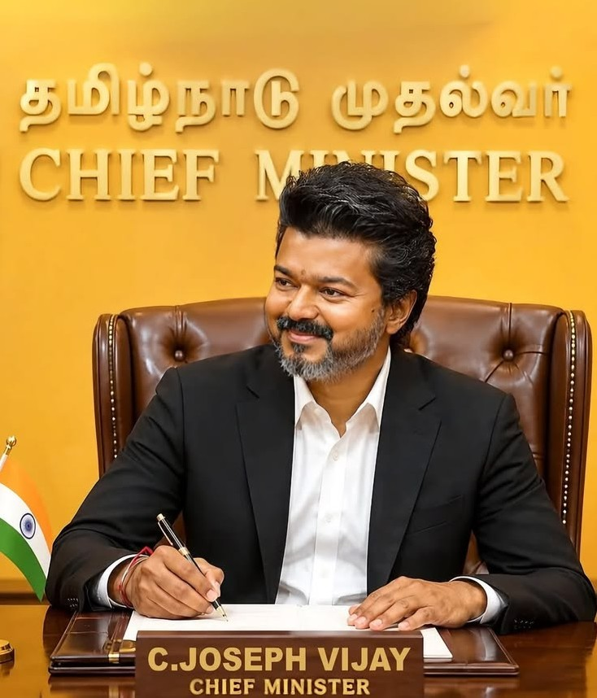

Joseph Vijay Chandrasekhar (born 22 June 1974), known mononymously as Vijay, is an Indian actor, dancer, playback singer and philanthropist who works predominantly in Tamil cinema and also appeared in other Indian languages films. Referred to by fans and media as "Thalapathy" (commander), Vijay is the highest paid actor in Tamil cinema. He has significant fan following globally. He has won numerous awards, including eight Vijay Awards by Star India ,three Tamil Nadu State Film Awards by Government of Tamil Nadu, and a SIIMA Award . He has been included several times in the Forbes India Celebrity 100 list, based on the earnings of Indian celebrities.
-Biography by: Prakash
69 Movies (1992 - 2026) with Box Office Verdicts
| S.No | Movie | Year | Verdict |
|---|---|---|---|
| 1 | Naalaiya Theerpu | 1992 | Flop |
| 2 | Sendhoorapandi | 1993 | Hit |
| 3 | Rasigan | 1994 | Hit |
| 4 | Deva | 1995 | Average |
| 5 | Rajavin Parvaiyile | 1995 | Flop |
| 6 | Vishnu | 1995 | Average |
| 7 | Chandralekha | 1995 | Average |
| 8 | Coimbatore Mappillai | 1996 | Hit |
| 9 | Poove Unakkaga | 1996 | Blockbuster |
| 10 | Vasantha Vaasal | 1996 | Flop |
| 11 | Maanbumigu Maanavan | 1996 | Flop |
| 12 | Selva | 1996 | Average |
| 13 | Kaalamellam Kaathiruppen | 1997 | Average |
| 14 | Love Today | 1997 | Super Hit |
| 15 | Once More | 1997 | Hit |
| 16 | Nerrukku Ner | 1997 | Hit |
| 17 | Kadhalukku Mariyadhai | 1997 | Blockbuster |
| 18 | Ninaithen Vandhai | 1998 | Hit |
| 19 | Priyamudan | 1998 | Super Hit |
| 20 | Nilaave Vaa | 1998 | Flop |
| 21 | Thulladha Manamum Thullum | 1999 | Blockbuster |
| 22 | Endrendrum Kadhal | 1999 | Flop |
| 23 | Nenjinile | 1999 | Flop |
| 24 | Minsara Kanna | 1999 | Hit |
| 25 | Kannukkul Nilavu | 2000 | Average |
| 26 | Kushi | 2000 | Blockbuster |
| 27 | Priyamanavale | 2000 | Super Hit |
| 28 | Friends | 2001 | Super Hit |
| 29 | Badri | 2001 | Hit |
| 30 | Shahjahan | 2001 | Hit |
| 31 | Tamizhan | 2002 | Average |
| 32 | Youth | 2002 | Hit |
| 33 | Bhagavathi | 2002 | Hit |
| 34 | Vaseegara | 2003 | Average |
| 35 | Pudhiya Geethai | 2003 | Flop |
| 36 | Thirumalai | 2003 | Blockbuster |
| 37 | Udhaya | 2004 | Flop |
| 38 | Ghilli | 2004 | Industry Hit |
| 39 | Madhurey | 2004 | Average |
| 40 | Thirupaachi | 2005 | Blockbuster |
| 41 | Sukran | 2005 | Special Appearance |
| 42 | Sachein | 2005 | Hit |
| 43 | Sivakasi | 2005 | Blockbuster |
| 44 | Aadhi | 2006 | Flop |
| 45 | Pokkiri | 2007 | Industry Hit |
| 46 | Azhagiya Tamil Magan | 2007 | Average |
| 47 | Kuruvi | 2008 | Average |
| 48 | Villu | 2009 | Flop |
| 49 | Vettaikaaran | 2009 | Hit |
| 50 | Sura | 2010 | Flop |
| 51 | Kaavalan | 2011 | Hit |
| 52 | Velayudham | 2011 | Hit |
| 53 | Nanban | 2012 | Super Hit |
| 54 | Thuppakki | 2012 | Blockbuster |
| 55 | Thalaivaa | 2013 | Average |
| 56 | Jilla | 2014 | Hit |
| 57 | Kaththi | 2014 | Blockbuster |
| 58 | Puli | 2015 | Flop |
| 59 | Theri | 2016 | Blockbuster |
| 60 | Bairavaa | 2017 | Average |
| 61 | Mersal | 2017 | Blockbuster |
| 62 | Sarkar | 2018 | Hit |
| 63 | Bigil | 2019 | Blockbuster |
| 64 | Master | 2021 | Blockbuster |
| 65 | Beast | 2022 | Average |
| 66 | Varisu | 2023 | Super Hit |
| 67 | Leo | 2023 | Blockbuster |
| 68 | The Greatest of All Time (GOAT) | 2024 | Hit |
| 69 | Jana Nayagan | 2026 | Released |